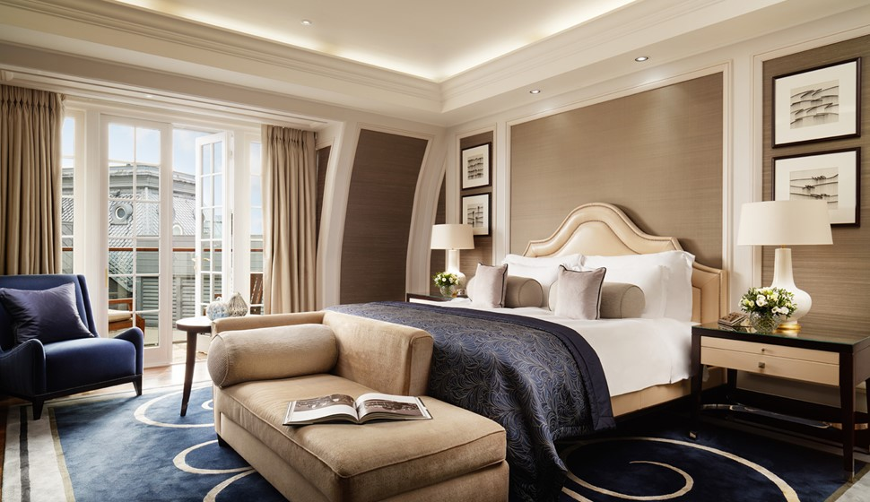
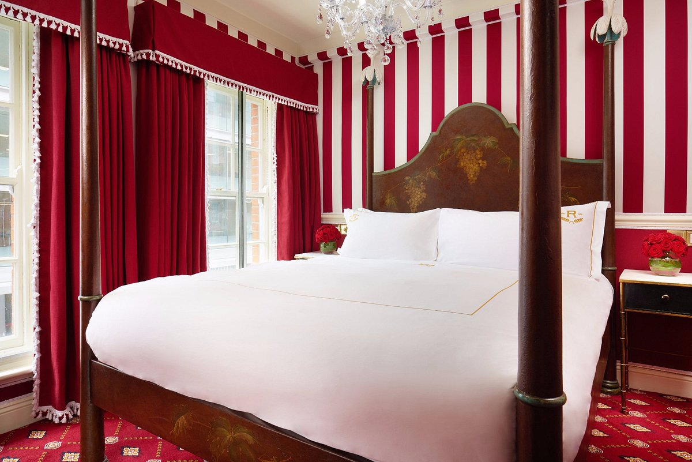
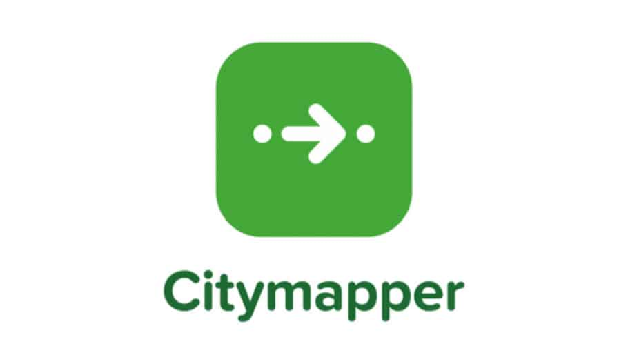

If you are looking for the best 4-star or 5-star hotel, then you are on the right page.
The following links direct you to explore the best hotels in London and includes reliable information
pertaining to your luxury needs.
| Hotel Overview |
Picture |
More Information |
| The Londoner – the world's first super boutique hotel, welcomes you to an urban resort on the south west corner of Leicester Square. The hotel offers a collection of spaces, tastes and experiences brought to life across 16 storeys, curated to reflect the drama and elegance of West End life. |
|
Click this link below for more information!
The Londoner |
| The Corinthia – a modern luxury hotel, is not to be missed. Giving the best Grand Dame properties in the city a run for their money, the hotel is swanky in the extreme, with swinging Baccarat chandeliers here and palatial columns there, leaving well-heeled guests blinded with bling. Aside from the usual tip-top service that you’d expect from a solid five-star dream stay, the Corinthia’s spa is a highlight to luxuriate in. |
 |
Click this link below for more information!
Corinthia |
| The Rubens at the Palace – a beautifully restored historic hotel, is cared for by a team who take genuine pride in delivering impeccable service and exceeding expectations at every turn. The Rubens showcases exceptional dining journeys and enriching and rewarding experiences, from the very first moment guests are greeted by our red-uniformed doormen. |
 |
Click this link below for more information!
Rubens at the Palace |
Do you want the best navigational experience? Well now, you have easy to use
on the go navigation apps that can give you best benefits along with the right transporation
for you to get to where you need to be.
The following links direct you to explore the best transportation apps intended for your
own safety and conviencne while being in London.
| App Overview |
Picture |
More Information |
| Citymapper is a public transit app and mapping service which displays transport options, usually with live timing, between any two locations in a supported city. It integrates data for all urban modes of transport, including walking, cycling and driving, in addition to public transport. |
 |
Click this link below for more information!
CityMapper |
| Transport For London (TfL) is a local government body responsible for most of the transport network in London, UK. TfL has responsibility for multiple rail networks including the London Underground and Docklands Light Railway, as well as London's buses, taxis, principal road routes, cycling provision, trams, and river services. |
|
Click this link below for more information!
Transport for London |